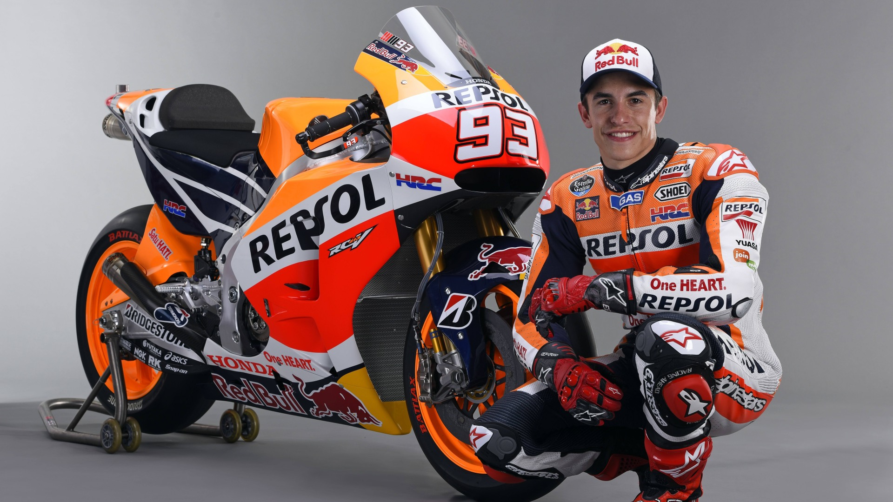

Marc Márquez
Marc Marquez Alenta atau yang akrab dikenal dengan nama Marc Marquez merupakan pembalap kelas dunia. Pembalap yang berkewarganegaraan Spanyol ini dilahirkan di Cervera, Lleida, Spanyol 17 Februari 1993. Ia memiliki seorang adik yang berprofesi sama dengannya Alex Marquez. Motor bagi Marquez adalah kecintaannya. Dia mendapatkan hadiah motor mini ketika usianya masih 4 tahun. Sejak saat itulah Marquez kecil mulai menggeluti dunia otomotif, khususnya balap. Karir Marquez di dunia balap profesional diawali di kejuaraan Grand Prix Portugal kelas 125cc bersama tim Repsol Honda, 13 April 2008. Debutnya di usia 15 tahun 56 hari ini memecahkan rekor pembalap Spanyol termuda yang menduduki posisi pole atau podium kejuaraan balap motor dunia. Marquez tampil gemilang selama dua tahun karirnya di level 125cc. Dia sukses menempati podium juara dua bulan selang debut pertamanya, 22 Juni 2008, di ajang Grand Prix Inggris. Marquez juga tercatat sebagai pembalap kelas 125cc yang berhasil finish di urutan pertama selama empat kali berturut-turut setelah Valentino Rossi. Tak hanya itu, ia berhasil menjadi juara dunia balap kelas 125cc di 2010.
Sukses di sirkuit 125cc, Marquez langsung menaikkan levelnya ke kelas Moto2 (600cc). Atlet balap 20 tahun ini kembali tampil gemilang di medan barunya. Meskipun sukses finish di urutan pertama kompetisi terakhir musim 2011, ia harus rela kalah dari saingan terberatnya %Stefan Perbedaan 23 poin membuatnya rela berada di urutan kedua musim itu."Di Moto2, saya belajar banyak hal. Di 125cc berbeda karena Anda bisa all-out dari start sampai finish, tapi di Moto2, Anda perlu mempelajari ban, dan beradaptasi," sahut Marquez. "Kami belajar banyak hal." Penampilan Marquez di kelas Moto2 yang apik membuatnya beberapa kali dikabarkan segera menaikkan kelasnya ke MotoGP. Namun hal itu dibantahnya dengan memperpanjang kontrak Moto2 untuk musim 2012. Ia pun sukses meraih gelar juara musim itu dengan meraih 324 poin. 12 Juli 2012, Marquez mengumumkan kepindahannya ke kelas MotoGP. Dirinya didapuk mendampingi Dani Pedrosa sekaligus menggantikan posisi Casey Stoner yang memutuskan pensiun muda.